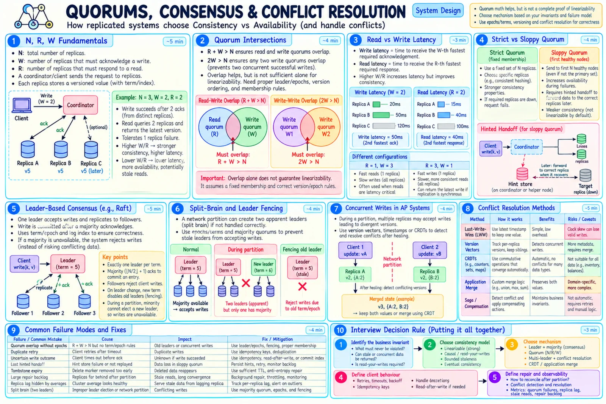

Topic · CAP Theorem in Depth
Quorums, Consensus, and Conflicts
How CP is built (majorities, terms, fencing) and how AP cleans up (versions, CRDTs, merges, anti-entropy).


Quick Revision
R + W > N= read and write quorums overlap - necessary, not sufficient for linearizability.- Majority =
floor(N/2) + 1: 3 → 2, 5 → 3, 7 → 4. - Consensus (Raft/Paxos) is a CP mechanism - the minority can't commit.
- Heartbeats suspect; fencing tokens actually stop old leaders.
- LWW loses writes; vectors detect concurrency; CRDTs converge but don't enforce every invariant.
Quorums
N replicas, W write acks, R read responses R + W > N → every read quorum meets every write quorum 2W > N → any two write quorums meet N=3: R=2, W=2 common write latency ≈ W-th fastest ack · read latency ≈ R-th fastest response US-East client: A 4 ms, B 70 ms, C 105 ms W=1 ≈ 4 ms · W=2 ≈ 70 ms · W=3 ≈ 105 ms
- Overlap isn't enough - still need fixed membership, ordering of concurrent writes, version recognition, fencing, reconciled reads, no membership change mid-flight, safe clocks, no sloppy substitutes.
- Strict quorum - intended replica set only; fails if too many are down.
- Sloppy quorum - first healthy nodes incl. substitutes; more available but needs hinted handoff and repair, weaker guarantees.
Consensus, fencing, leases
leader (term 8) appends → replicates → majority acks → commit → apply → respond 3 nodes split 2 + 1: pair elects/keeps leader; single node can't commit 5 nodes split 2 + 2 + 1: no majority anywhere → writes stop fencing: leader A token 41, leader B token 42 storage accepts token ≥ current → A's write with 41 rejected
- Split brain - two sides think they're authoritative; prevent with majority consensus, monotonic epochs, storage-level fencing.
- Strong follower reads - only via leader, quorum read, confirmed commit index, or valid lease/read-index.
- Leases - fast local reads but watch clock uncertainty, GC pauses, overlap, renewal failure.
Conflict resolution (AP)
v1: name = "Sam" Region A: "Samuel" @ v2A Region B: "Samir" @ v2B → concurrent siblings
| Method | Fit | Risk |
|---|---|---|
| Last-write-wins | Disposable scalars | Clock skew drops valid writes |
| Version vector | Objects needing conflict visibility | Metadata growth; app still merges |
| CRDT | Counters, sets, maps, collab state | Not every invariant is mergeable |
| Field-wise merge | Profiles | Same-field conflicts remain |
| Application merge | Carts, documents | Product-specific code |
| Saga / compensation | Cross-service workflows | Temporary inconsistency |
| Human review | Rare high-value records | Slow |
- CRDT limits - a seat can still be sold twice; a balance can still be double-spent.
- Escrow - 100 tickets: Region A gets 60 sell rights, B gets 40; each sells locally during a partition. Rebalancing rights needs coordination.
Healing after a partition
- CP - detect recovery → find current leader/committed log → reject stale terms and uncommitted divergence → stream missing entries → restore RF → validate indexes/views/consumers → re-enable routing gradually.
- AP - exchange version summaries → detect missing and concurrent → merge/choose/compensate → keep tombstones → read repair/anti-entropy → rebuild views/caches → audit → verify convergence.
- Merkle trees - compare root hashes, descend only into mismatching ranges.
- Tombstones - versioned deletes retained beyond the repair window, or deleted data resurrects.
Trade-offs
| Choice | Benefit | Cost / risk |
|---|---|---|
| Leader-based writes | Simple total order | Leader bottleneck, failover |
| Multi-leader writes | Regional write availability | Conflict reconciliation |
| Leaderless quorum | Flexible, tunable | Versioning, repair, sloppy semantics |
| Majority quorum | Clear intersection | Tail latency; stuck without majority |
R=1 local read | Lowest latency | May be stale |
| Quorum read | Newer version + repair | More calls, tail latency |
| Strict vs sloppy quorum | Defined semantics vs availability | Unavailable vs divergence |
| LWW | Simple | Loses concurrent updates |
| Version vectors | Detect concurrency | Metadata and merges |
| CRDT | Automatic convergence | Limited invariants, overhead |
| Escrow rights | Bounded invariants stay available | Capacity stranded per region |
| 2PC | Atomic multi-participant commit | Blocking, poor partition availability |
| Saga | Scales cross-service workflows | Temporary inconsistency |
Failure modes
- Same seat accepted in two regions - consensus, single owner, quorum, or preallocated rights.
- Split-brain leaders - majority consensus, terms, fencing.
- Old leader writes after failover - storage validates fencing token.
- Quorum arithmetic assumed sufficient - add epochs, versions, fixed membership.
- Sloppy quorum sold as linearizable - document weaker semantics.
- LWW drops valid edit / clock skew - siblings, logical/hybrid versions, domain merge.
- Vector clocks grow - prune carefully or dotted versions.
- CRDT used for exclusive seat - coordinate or allocate disjoint rights.
- Minority serves "strong" follower read - leader/read-index/quorum.
- Tombstone expires too early - retain beyond repair window.
- Healing overwrites a branch - compare versions, merge/compensate.
- Conflict backlog grows silently - metrics, alerts, DLQ, operator workflow.
- 2PC blocks on coordinator failure - recovery protocol, replicated coordinator, or saga.
- Election storms from flapping - tune timeouts, pre-vote, hysteresis.
- Repair saturates production - rate-limit and stagger anti-entropy.
Interview practice
Answer aloud, then reveal.
Does R + W > N guarantee strong consistency?
Only quorum intersection under fixed membership. Also needs version ordering, epochs, conflict handling, read selection, failover rules.
Why might R=2, W=2, N=3 still not be linearizable?
Overlap doesn't define ordering, membership epochs, concurrent-write resolution, or stale-leader fencing.
How does Raft behave in a 2 + 1 split?
The pair commits; the single node can't. An isolated old leader must be fenced by term/lease/token.
Can a 3-node CP system tolerate one failure?
Yes if the other two connect and form a majority; if no majority is reachable, writes stop.
Why is last-write-wins dangerous?
It silently drops a concurrent update and trusts clocks. Fine for disposable fields, not balances or ownership.
When are CRDTs appropriate?
When operations are naturally mergeable (counters, sets, some maps) and convergence satisfies the product rule.
Prevent double spending while staying available?
Not generally without coordination; use escrow/per-region limits, or go CP for the debit.
Can an AP system guarantee uniqueness?
Not for concurrent creation on isolated replicas; use partitioned ID schemes, a single owner, consensus, or accept and reconcile duplicates.
Active-active multi-region writes strongly consistent?
Only with global coordination (latency + partition unavailability); otherwise conflict resolution or pre-partitioned ownership.
What happens to AP writes when the partition heals?
Exchange versions, find missing/concurrent updates, merge or compensate, repair views, verify convergence.